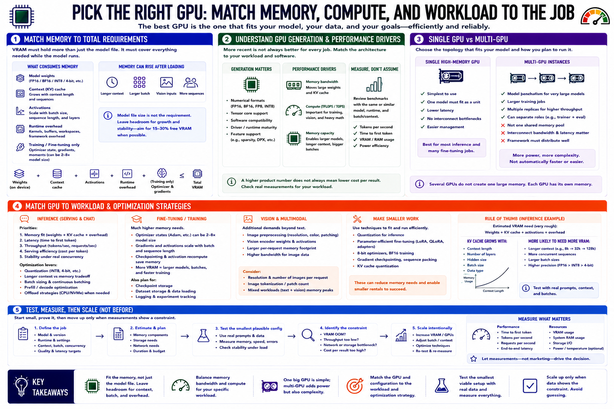

Matching GPU Type to Workload
Connecting to LMS... Progress: in progress

Narration
Match the accelerator to the memory and compute profile of the job. VRAM must hold model weights, context cache, activations, runtime overhead, and, for training or fine-tuning, optimizer and gradient state. Model file size alone is not a complete requirement. Longer context, larger batches, vision inputs, and concurrent sequences can raise memory use after the model has loaded.
GPU generation affects supported numerical formats, software compatibility, and performance. Memory bandwidth influences how quickly large model weights can be moved during inference. Raw compute matters more for some training and image workloads. Review measurements from a comparable model and runtime rather than assuming that a higher product number is always more economical.
A single high-memory GPU is often easier to use than several smaller devices when one model must fit as a unit. Multi-GPU instances can support model parallelism, larger training jobs, or multiple replicas, but the framework must distribute work effectively and interconnect performance can matter. Several GPUs do not automatically create one shared memory pool.
Inference usually prioritizes memory fit, latency, throughput, and serving efficiency. Fine-tuning may require much more memory and checkpoint storage. Quantization can make inference practical on a smaller rental, while parameter-efficient tuning can reduce training requirements. Vision and multimodal models add image-processing and memory demands. Test the smallest plausible configuration with real prompts, context, and batches, then move upward only when measurements identify a constraint.